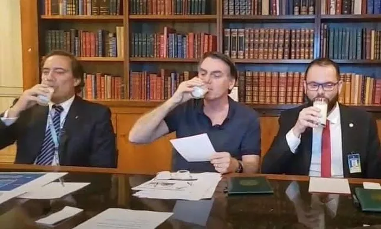
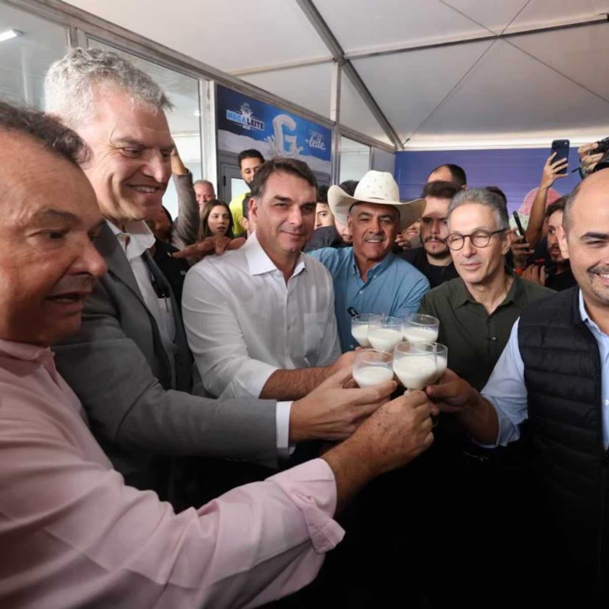
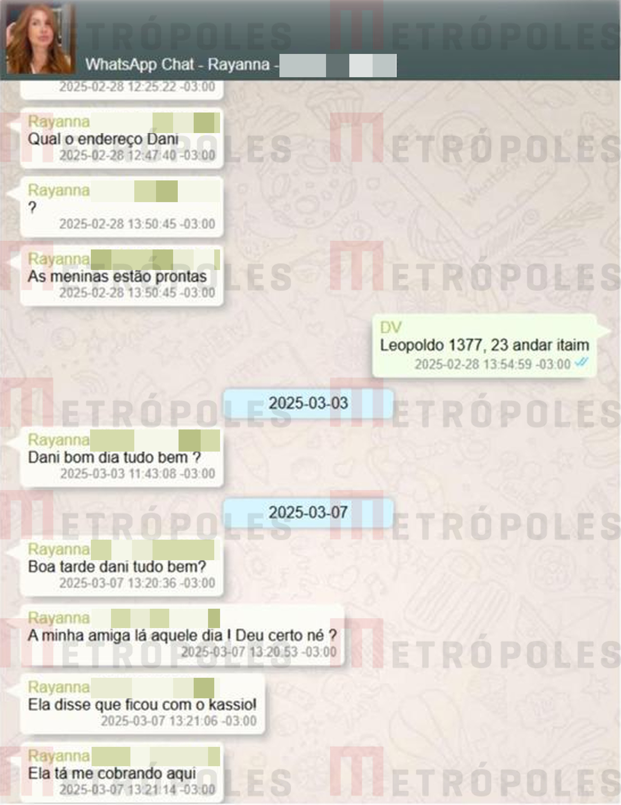
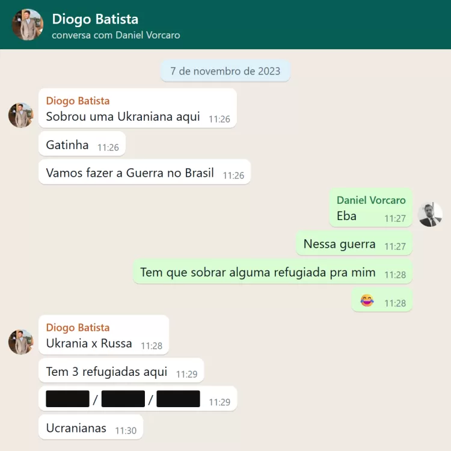

FLÁVIO BOLSONARO REALIZA SAFÁRI COM INVESTIGADOS DO INSS
WILLER TOMAZ PEDE REEMBOLSO DE 163 MILHÕES APÓS APOSTAR 5 BILHÕES EM BETS
LUCIANO HUCK E VORCARO FECHAM NEGÓCIOS
MORAES MODIFICOU CONTRATO DE R$ 131 MILHÕES ENTRE VORCARO E ESCRITÓRIO DA ESPOSA DO MINISTRO
FLÁVIO BOLSONARO RECEBE 61 MILHÕES DE REAIS DE VORCARO - PEDIU 134 MILHÕES
"FALA, IRMÃOZÃO": FLÁVIO BOLSONARO TROCA MENSAGENS COM VORCARO
FLÁVIO BOLSONARO ALEGA QUE MENTIU SOBRE RELAÇÃO COM VORCARO
"BOMBARDEAMOS TUDO O QUE SE MOVIA", AFIRMA DEAN RUSK (EUA) SOBRE A GUERRA DA COREIA
CRISE NO IRÃ AFETA ENERGIA NA FRANÇA
HOUTHIS ATINGEM INSTALAÇÕES DA SAUDI ARAMCO NA ARÁBIA SAUDITA
DEZENAS DE MILHARES DE ESTUDANTES PROTESTAM NA ALEMANHA CONTRA SERVIÇO MILITAR OBRIGATÓRIO
FALTANDO 8H30 PARA O FIM DA VOTAÇÃO, FLÁVIO BOLSONARO FAZ APELO POR VOTO
B22 SOLANA TOKEN
VORCARO ALUGA MANSÃO DE R$ 250 MILHÕES PARA KN NO CARNAVAL POR R$ 1,5 MILHÃO
TSE SUSPENDE SITE QUE OFERECE CRIPTOMOEDA A QUEM DIVULGAR CONTEÚDO QUE DEFENDE VOTO EM FLÁVIO BOLSONARO
DIÁLOGOS DE VORCARO CITAM SUPOSTA MESADA DE R$ 500 MIL PARA FILHO DE NUNES MARQUES
HYPERSKIDS PEDE DESCULPAS SOBRE CAMPANHA PRÓ-BOLSONARO
FAMÍLIA TRUMP LUCRA BILHÕES ENQUANTO INVESTIDORES PERDEM NA MESMA PROPORÇÃO
RÚSSIA AJUDA O IRÃ NA GUERRA COM INFORMAÇÕES SOBRE ALVOS MILITARES DOS EUA
TRUMP FECHA ACORDO COM A RÚSSIA PARA FORNECIMENTO DE DIESEL
TRUMP FALA EM "MATAR TODO MUNDO" E DIZ "ALÁ SEJA LOUVADO"
EUA PRESSIONAM E G7 LIBERA 100 MILHÕES DE BARRIS DE RESERVAS DE DIESEL
JAIR BOLSONARO BEBE LEITE EM LIVE, GESTO APONTADO COMO APITO DE CACHORRO SUPREMACISTA

FLÁVIO BOLSONARO E ZEMA BEBEM LEITE EM LIVE, GESTO APONTADO COMO APITO DE CACHORRO SUPREMACISTA

UCRÂNIA ATACA DATA CENTERS DA YANDEX NA RÚSSIA E ATIVIDADE DE BOTS RUSSOS DESPENCA
GRINDR TERIA CAÍDO POR ALTA ATIVIDADE EM DALLAS DURANTE CONVENÇÃO REPUBLICANA; EMPRESA NEGA
WIKILEAKS: EUA PROMOVEM NO RIO O "PROJETO PONTES", SEMINÁRIO COM SERGIO MORO, JUÍZES, PROCURADORES E POLICIAIS FEDERAIS
COMO MINISTRO DA JUSTIÇA, SERGIO MORO SE REÚNE COM FBI E CIA EM WASHINGTON
AGÊNCIA PÚBLICA REVELA QUE SERGIO MORO ABRIU AS PORTAS DO MINISTÉRIO DA JUSTIÇA PARA O FBI
"ELA FICOU COM O KASSIO": CONVERSA DE VORCARO CITA COBRANÇA DE R$ 10 MIL POR ENCONTRO

VORCARO ERA SÓCIO OCULTO DE AGÊNCIA DE PROSTITUIÇÃO E RECRUTOU REFUGIADAS

"TURMA DO KN" NEGOCIOU CONTRATO DE R$ 427 MILHÕES COM O BANCO MASTER, APONTAM MENSAGENS